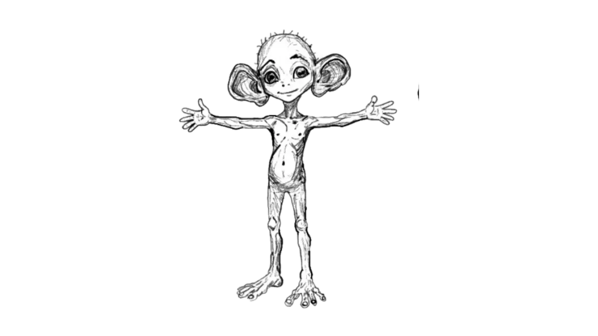
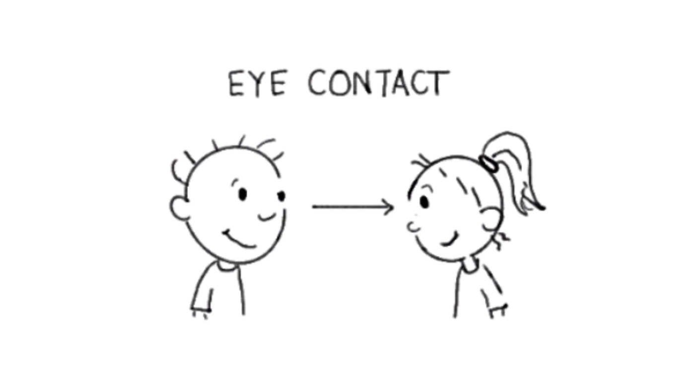
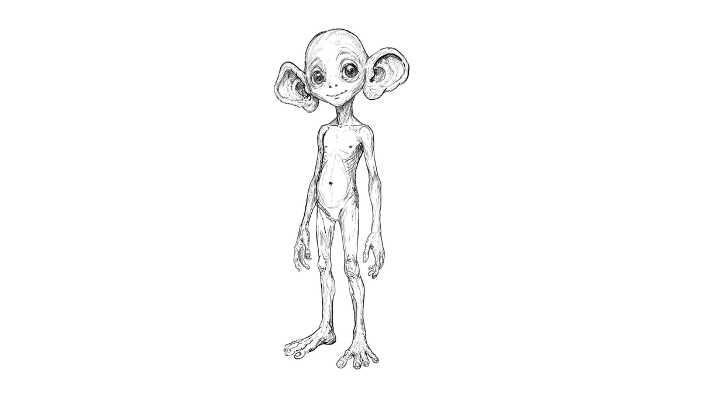
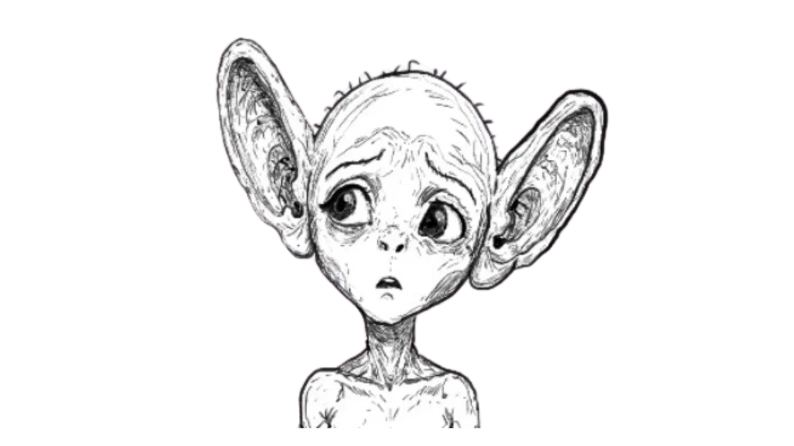
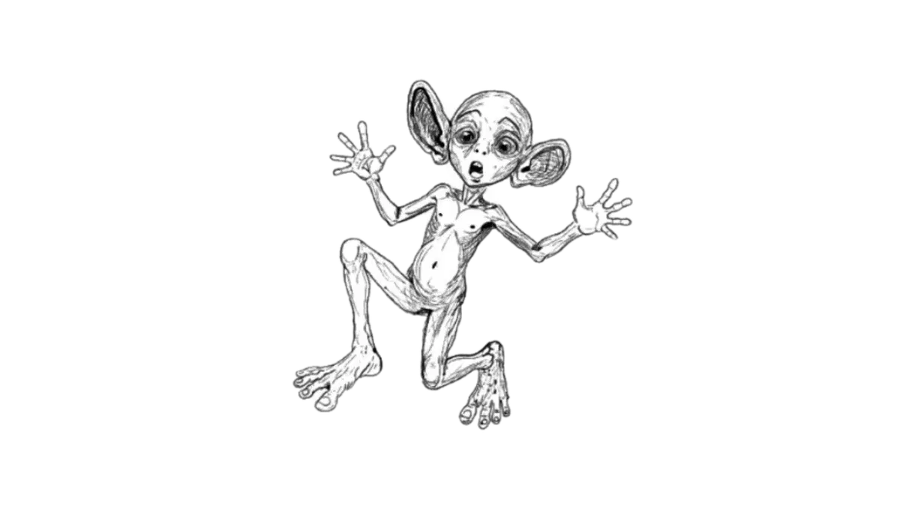
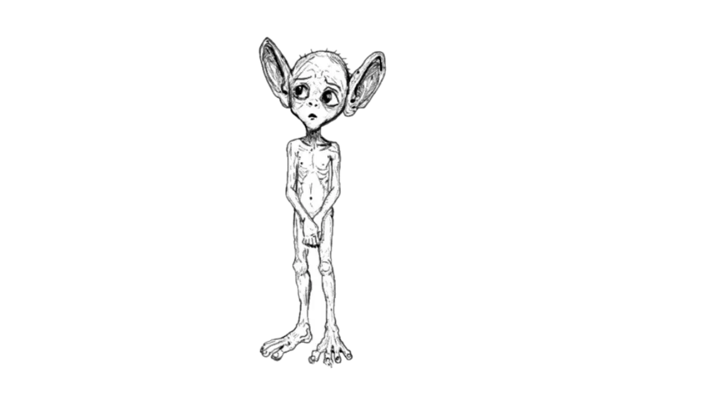

FIRST CONTACT // EARTH CLASSROOM
GLORB
INCOMING TRANSMISSION
Searching 47 light years of classroom space…

FIRST CONTACT // EARTH CLASSROOM
RESEARCH BRIEFING

ACTIVE LISTENING CARD

EARTH EXPERT CONSOLE
We are learning to identify what active listening looks like, sounds like and feels like, and how our body helps us listen.
MISSION 01

GLORB: My first chart had only two categories. This was an administrative failure. Sort each card into what listening looks like, sounds like or feels like.
Drag a card, or tap it and then tap a category.
What I can see
What I can hear
How the speaker may feel
MISSION 02

GLORB: I have located seven body systems. Please install one listening instruction into each correct system before I speak to Pip again.
Drag or tap a label, then choose the matching body part.
MISSION 03

GLORB
“Pip is coming back. Their dog is still sick. I have one cloud fact ready, but I now suspect this is not the correct moment. What should I do?”
FINAL INCIDENT REPORT
Glorb: “Pip, I would like to try that conversation again. I am facing you. I will wait until you finish. Is your dog feeling better?”
Pip: “A little. Thanks for asking.”
Glorb: “They are still talking to me. This is going well. My ears are currently 83% happier.”